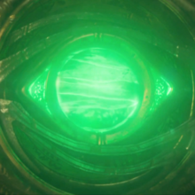

| Name |
Color |
Powers and capabilities |
Image |
| Soul |
Orange |
The Soul Stone has the ability to manipulate the soul, the essence that makes up an individual, and has the ability to resurrect and conjure the spiritual representation of the people who are dead |

|
| Time |
Green |
Iiit allows manipulation of time then occurs primarily through the conjuration of a green, circular mandala made of energy in the user's hand. |
 |
| Space |
Blue |
As the Infinity Stone that represents and governs over space, the Space Stone grants the wielder absolute control over space itself. |
 |
| Mind |
Yellow |
As the Infinity Stone that represents and governs over space, the Space Stone grants the wielder absolute control over space itself. |
 |
| Reality |
Red |
As the Infinity Stone that represents and governs over space, the Space Stone grants the wielder absolute control over space itself. |
 |